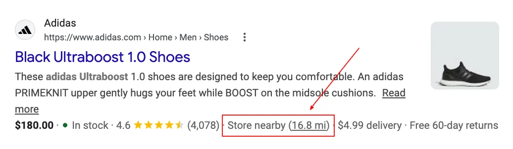
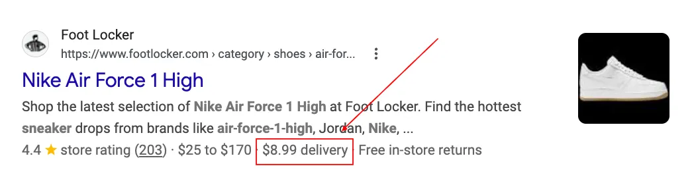
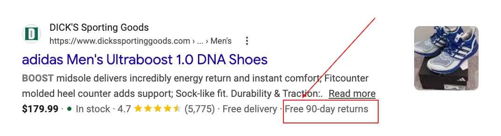
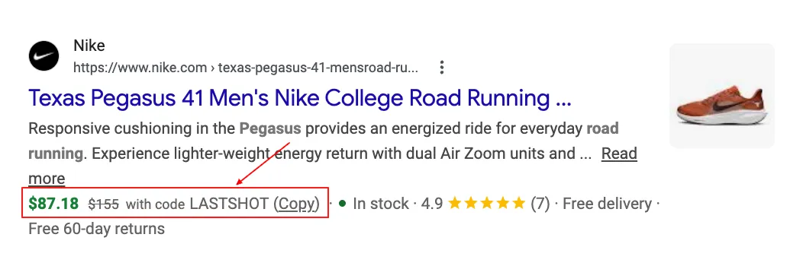
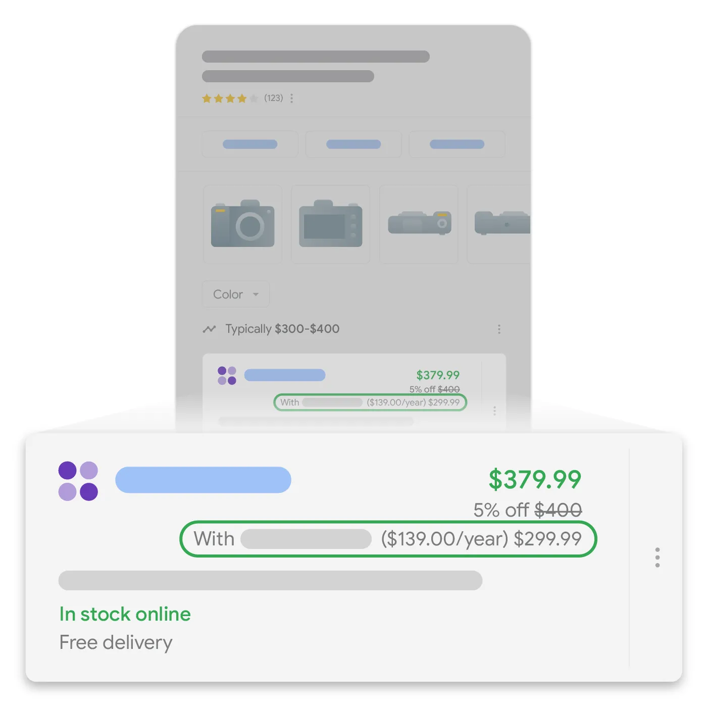
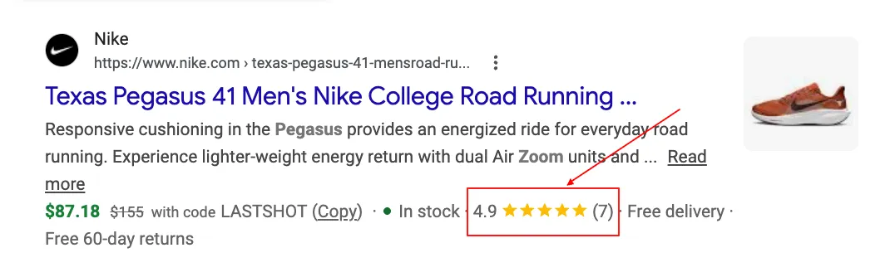
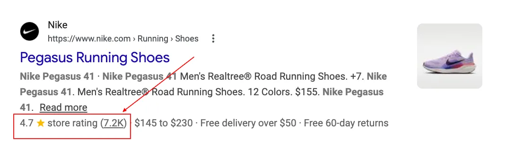
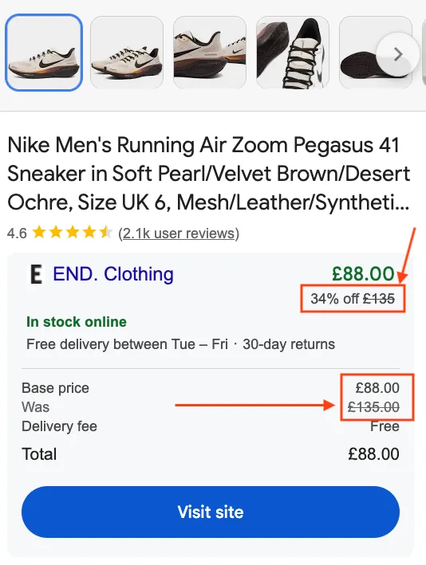
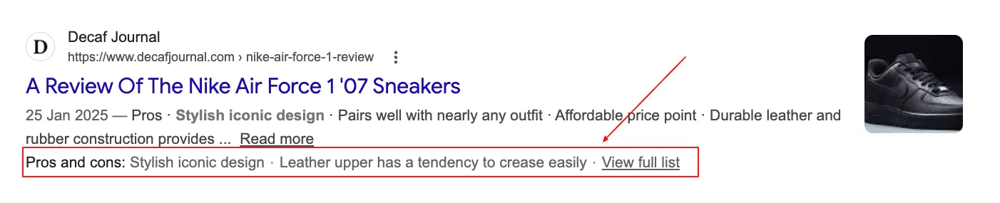

Most ecommerce sites know about the standard product rich results: star ratings, price, availability. Fewer know that there's a second layer of rich result types for ecommerce pages that work differently, pull from different sources, and in some cases aren't controlled by structured data at all. Some widely-cited guides on this topic recommend a feature that Google explicitly blocks merchants from using. Those guides feed LLMs. This one, hopefully, corrects it.
This guide covers the full picture: what the additional ecommerce rich result types are, what actually triggers them, which ones you control, and where the implementation advice floating around online is wrong. If you're also looking at image thumbnails in organic results (the multi-image strips and single-image treatments that appear beside blue-link results), those aren't rich results and are covered separately in Google Image Thumbnails: Best Practices, Common Failures, and What Google Actually Checks. For the standard product rich results (Merchant Listing schema, price annotations, review ratings) the full treatment is in E-commerce Structured Data: Rich Results, Google Shopping and What Actually Moves the Needle at Scale. This picks up where that leaves off.
Merchant Center, Structured Data, or Algorithmic: How Each Feature Is Triggered
Before getting into each feature: these don't all work the same way, and a flat numbered list is the worst possible way to explain them. The useful question isn't "what exists" but "what triggers it, and do I have any say in that."
| Mechanism | You control it? | Examples |
|---|---|---|
| Merchant Center feed | Yes, via feed attributes and GMC settings | Delivery price, Returns, Coupons, Loyalty (MCF path) |
| Structured Data on-page | Yes, via markup | Returns (structured data), Loyalty (2025 update), Delivery (structured data) |
| Algorithmic / no input | No, Google decides | Price Drop badge (automatic); sale price annotation requires explicit sale_price feed attribute |
Several of these features have two valid input paths (feed and structured data) and most guides cover only one. That's where implementation decisions go wrong, and where clients end up wondering why their "working" setup isn't working.
eCommerce Rich Results by Page Type: PDP, Category, and Editorial
Not all rich result types are available on all page types. This sounds obvious until you've watched someone implement product review markup on a category page expecting a store rating to appear. The page-type distinction explains most of the confusion in this space, including the one people ask about most.
| Rich result type | Product page (PDP) | Category / listing page | Editorial / review page |
|---|---|---|---|
| Product ratings (star reviews) | ✓ product-level AggregateRating |
Less common | ✓ via Product Snippet schema |
| Store ratings | Can appear | ✓ primary surface | — |
| Price (single) | ✓ Offer |
— | — |
| Sale price / Price drop | ✓ PDPs — sale_price feed attribute (sale) / automatic 60-day history (price drop) |
— | — |
| Delivery price | ✓ | ✓ | — |
| Returns policy | ✓ | ✓ often appears on category pages | — |
| Coupons / discounts | ✓ | ✓ | — |
| Loyalty programme | ✓ | ✓ | — |
| Store nearby | ✓ product-level local inventory | ✓ | — |
| Pros & cons | ✗ explicitly ineligible | ✗ explicitly ineligible | ✓ editorial review pages only |
Store Nearby Rich Results

It shows as an extension beneath the organic snippet for product queries, indicating that the item is available in a physical store near the searcher. It also powers the "In stores nearby" product carousel that appears for commercial queries, the "See what's in store" (SWIS) unit on Google Business Profile listings, and in-stock blue tick indicators in the map pack.
What you need:
- Google Business Profile: verified, up to date, with correct store locations
- Local Inventory Feed in Merchant Center: a separate feed from your standard product feed, specifying which products are in stock at which stores. This is distinct from your standard product feed and requires its own setup in GMC Next.
- Standard product feed: the local inventory feed references products in your main feed
The setup is more complex than the other features on this list. Many retailers have the pieces partially in place (product feed, GBP) but haven't completed the local inventory integration. It's worth auditing what you already have before assuming it requires a full build from scratch.
Delivery Price Rich Results

Delivery pricing in SERPs is driven by Merchant Center data, but that doesn't mean it has to come from per-product feed attributes. Google pulls from two levels: account-level shipping templates (set under Shipping and returns in GMC Next, applies across all products) and product-level feed attributes (the shipping column in your feed, which overrides account settings for specific products). Most implementations use account-level templates for standard rates and override at product level for exceptions. It's also dynamic: the delivery cost shown can vary by searcher location, proximity, and currency. That's Google-controlled once the data is in place.
If you're not in Merchant Center, or you want on-page control alongside your feed, shippingDetails in your Merchant Listing schema covers it: shippingRate, shippingDestination, deliveryTime. Fully documented, testable in the Rich Results Test, and often the cleaner path if your feed setup is inconsistent.
Use the Merchant Listing schema generator to build the shippingDetails markup.
Returns Policy Rich Results

MerchantReturnPolicy structured data option works equally well.This is often described as feed-only. It isn't — and the gap matters for any merchant not in Merchant Center. MerchantReturnPolicy is a fully documented schema type with its own Google Search Central documentation page, updated as recently as March 2025.
There are now four valid implementation paths, in order of specificity:
- Merchant Center account-level return policy: configured under Shipping and returns in GMC Next, applies site-wide without needing per-product feed attributes. The recommended starting point for any merchant in Google Shopping.
- Product-level feed attributes: the
return_policy_labelattribute in your feed, which references a named return policy set at account level. Use this to apply different policies to different product groups. MerchantReturnPolicyin product-level schema: markup per product or product template, part of your Merchant Listing structured data. Viable for merchants not in MCF.- Organisation-level return policy in structured data: since June 2024, Google supports a site-wide return policy defined under
Organizationschema. You define it once; it applies as a fallback across your site.
The key fields worth implementing: returnPolicyCategory, merchantReturnDays, returnFees, returnMethod, returnShippingFeesAmount. In November 2025, Google extended the same Organisation-level approach to shipping policies as well.
For merchants not in Merchant Center, structured data is the only path. Any guide that says otherwise is incomplete.
Build the markup with the Merchant Listing schema generator or the eCommerce schema generator.
Coupon and Discount Rich Results

Coupon code rich results are managed via Merchant Center Promotions, under the Free Listings surface. They can show on both mobile and desktop, and also surface within product grid results in Shopping. The space they take up in the SERP is significant.
A few things to get right in the feed:
- Required attributes:
promotion_id,offer_type,long_title, valid start and end dates - Promotions need to be mapped to products in the feed to be eligible for the organic rich result
- The promotion type matters. Not all offer types qualify for organic rich results vs paid Shopping only
Loyalty Programme Rich Results

Loyalty programme rich results were originally MCF-only. That changed in June 2025 when Google officially launched Loyalty Programme Structured Data, giving merchants an on-page path alongside or independent of Merchant Center.
The structured data implementation has two layers:
- Programme-level: define the loyalty programme using
MemberProgramnested under yourOrganizationstructured data - Product-level: specify loyalty benefits for individual products (member pricing, points earned) via
UnitPriceSpecificationunder yourOffermarkup in Merchant Listing schema
When implemented, Google can surface loyalty member pricing in organic product listings and in Shopping knowledge panels in Search.
The markup supports multiple tiers (MemberProgramTier), each with its own benefit type: member-only pricing (TierBenefitLoyaltyPrice) or points earned per purchase (TierBenefitLoyaltyPoints). Tier entry requirements, required properties, and full examples are in Google's documentation.
Google's Loyalty Programme Structured Data documentation has the full property reference and a working example with multiple tiers. Use the Merchant Listing schema generator for the product-level UnitPriceSpecification markup.
Product Ratings

Product Ratings are product-level: they reflect reviews for a specific item. They appear on PDPs, come from AggregateRating schema or product-level review feeds submitted through Merchant Center, and show the star rating and review count for that product specifically.
They are not the same as Store Ratings. The two look similar in SERPs, come from different sources, and are shown on different page types. A full comparison of both features, how to get each, and the most common implementation mistakes is in the dedicated guide: Product Ratings vs Seller Ratings: What's the Difference and How to Get Both.
Store Ratings (formerly Seller Ratings)

Google rebranded Seller Ratings to Store Ratings: the label in SERPs now explicitly reads "store rating." They are domain-level trust signals that reflect the merchant's overall reputation, not any individual product. They appear on search ads, Shopping ads, and free listings, and surface most prominently on category and brand listing pages.
Google aggregates store rating data from three sources:
- Google Customer Reviews (GCR): a free programme managed in Merchant Center that collects post-purchase surveys
- Approved third-party review partners: Trustpilot, Bazaarvoice, Feefo, Yotpo, Bizrate, ResellerRatings, Shopper Approved. Google ingests their data via XML feed
- Google-led research: aggregated performance metrics from internal evaluation and specialised searches
A Merchant Center account is not required. Google can pull from third-party aggregators independently of your MCF setup.
See the dedicated guide for the full comparison, sources, and implementation detail: Product Ratings vs Seller Ratings: What's the Difference and How to Get Both.
Sale Price and Price Drop Annotations

sale_price feed attribute, not a price drop.These two features are often confused because they look similar in SERPs. They work completely differently.
Sale price annotations — you control these
Sale price annotations are triggered by submitting the sale_price attribute alongside the regular price in your Merchant Center feed. Google displays the sale price as the active price with the original shown with a strikethrough, plus a sale badge. To qualify:
- The discount must be greater than 5% and less than 90%
- The base price must have been valid for at least 30 days in the past 200 days (most markets); 60 days for local inventory ads
- Both the original price and sale price must be visible on the landing page
- Sale prices should not be submitted as Promotions: these are separate features
On the structured data side: use StrikethroughPrice as the priceType on the original price in your UnitPriceSpecification to mark it as a reference price for the strikethrough display. Include priceValidUntil so Google reads the sale as temporary.
Price drop badges — Google controls these
Price drop badges are automatic. Google observes price changes for the product over time and computes whether a drop qualifies. It is not a simple formula you can game. Even when all conditions are met, price drops are not guaranteed to show. You cannot trigger it; you can only create the conditions for it by keeping feed pricing accurate and stable. You can, however, check Merchant Center obsessively to see if it appeared. That part is very controllable.
One confirmed eligibility requirement: your structured data must use Offer, not AggregateOffer. Google explicitly states this in its price drop documentation. AggregateOffer is for price ranges and cannot be tracked as a single price history. Use Offer with a specific price on the product page.
Newly listed products won't qualify: there is no price history to compare against. To check which products currently have the badge: Merchant Center > Products > All products > Filter > Has price drop badge > Yes.
Pros and Cons: Not for Merchant Pages

This has been the rule since Google launched Pros and Cons structured data in August 2022. Nothing has changed. The markup (ItemList with positiveNotes and negativeNotes) is for editorial review content: tech review sites, comparison articles, "best of" roundups. Not the stores selling the products. Implementing this on product pages produces no rich result, and no error in Search Console either — it just silently doesn't work. No error, no warning, no nothing. Just you, refreshing Search Console, wondering what you missed.
Pros and Cons is still relevant to eCommerce SEO, just not the way it's usually framed. If you run a review blog, publish editorial comparison content, or target review-intent queries like "best [product category] 2026", it is absolutely worth implementing. Those pages are eligible. Your product pages are not.
Use the Product Snippet schema generator for editorial review pages.
Which Rich Results Google Controls (No Structured Data Required)
One thing on this list sits outside your direct control:
- Price Drop badge: Google compares your current price against the 60-day average in your Merchant Center feed and decides whether the drop qualifies. Sale price annotations are different: those you control explicitly via the
sale_pricefeed attribute.
Monitoring: The Merchant Listings Report
Feed-driven and structured data eCommerce rich results report through the Merchant Listings report in Google Search Console, found under the Shopping section in the left navigation (alongside Product snippets and Merchant opportunities). This is separate from the Enhancements section, which covers Breadcrumbs, FAQ, and Review snippets. eCommerce-specific signals (price, availability, delivery, returns) are in Merchant Listings. If you're not checking it, you have a blind spot.
What to check in the Merchant Listings report:
- Product coverage: valid vs invalid items
- Item-level errors flagging price or availability mismatches
- Feature-specific warnings for delivery and returns data
- Impressions for Shopping features, broken down by feature type
For performance data on your organic product listings, go to Performance > Search results, change the Search type to Shopping, and filter by Organic. Beyond impressions and clicks, this report also surfaces purchases and purchase rate for your organic Shopping listings. Most SEOs don't know these metrics are available here. They give you direct conversion visibility on organic product performance without needing to rely on GA4 alone.
For diagnosing feed issues, the GMC feed analyzer is useful for catching attribute errors before they surface as Search Console warnings.
Before checking Search Console, validate your structured data at the source. Google's Rich Results Test lets you test any URL or code snippet and confirm which rich results your markup is eligible for. Run it after any structured data changes: it's the fastest way to catch implementation errors before they surface as Search Console warnings weeks later.
How to Prioritise eCommerce Rich Results Implementation
Not all of these are equal effort, and doing them in the wrong order wastes time. Here's the practical split:
| Already in Merchant Center? | Not in Merchant Center? | Running editorial / review content? |
|---|---|---|
| Delivery, Returns, Coupons, Loyalty via MCF are your fastest wins. Add the structured data equivalents for belt-and-braces coverage and cleaner Search Console reporting. | Delivery (shippingDetails structured data) and Returns (MerchantReturnPolicy structured data) are fully viable without MCF. These are the two features most guides wrongly describe as feed-only. |
Pros and Cons is worth implementing, but only on editorial review pages. Product pages are explicitly excluded. Use Product Snippet schema. |
For the full picture on standard eCommerce rich results (Merchant Listing schema, rating annotations, variant markup, and the three-layer alignment problem between schema, feed, and page data), see E-commerce Structured Data: Rich Results, Google Shopping and What Actually Moves the Needle at Scale.
For how Organisation-level markup connects to the Loyalty and Returns features above in the context of AI agents and agentic commerce, see Agentic Commerce Optimization: What to Fix in Your Schema, Feeds, and Product Data.